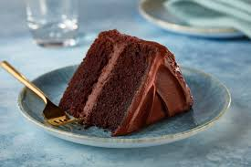
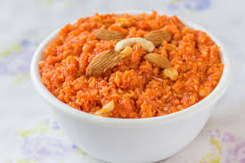

Ice cream is a frozen dessert typically made from milk or cream that has been flavoured with a sweetener, either sugar or an alternative, and a spice, such as cocoa or vanilla, or with fruit, such as strawberries or peaches. Food colouring is sometimes added in addition to stabilizers.

a breadlike food made from a dough or batter that is usually fried or baked in small flat shapes and is often unleavened. b. : a sweet baked food made from a dough or thick batter usually containing flour and sugar and often shortening, eggs, and a raising agent (such as baking powder)

It is one of the popular sweets of India usually made from semolina. The town of Bhatkal in Coastal Karnataka is famous for its unique Banana Halwa which is infused with either whole cashews, pistachio or almonds. This type of authentic halwas are a specialty of the Muslims of this town.